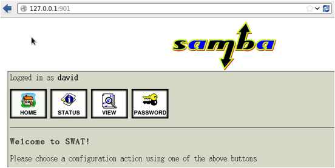

安装swat
swat是一个图形化的samba管理软件，可以帮助不熟悉的人去灵活的配置samba服务，
1、安装swat
[root@localhost wj]# yum install -y samba-swat
Dependency Updated:
libsmbclient.i686 0:3.6.23-51.el6 samba.i686 0:3.6.23-51.el6
samba-client.i686 0:3.6.23-51.el6 samba-common.i686 0:3.6.23-51.el6
samba-winbind.i686 0:3.6.23-51.el6 samba-winbind-clients.i686 0:3.6.23-51.el6
Complete!
[root@localhost wj]#
2、修改swat配置文件“/etc/xinetd.d/swat”
[root@localhost wj]# gedit /etc/xinetd.d/swat
service swat
{
port = 901 //端口号
port = 901 //
端口号
socket_type = stream
wait = no
only_from = 127.0.0.1 //是否只允许本机登录，如果想在其他电脑登录，那么用#注释掉这句话。
only_from = 127.0.0.1 //
是否只允许本机登录，如果想在其他电脑登录，那么用
#
注释掉这句话。
user = root
server = /usr/sbin/swat
log_on_failure += USERID
disable = no //这里一定要是no，默认yes
disable = no //
这里一定要是
no
，默认
yes
}
3、修改防火墙，添加tcp的901端口
[root@localhost wj]# gedit /etc/sysconfig/iptables
-A INPUT -m state --state NEW -m tcp -p tcp --dport 901 -j ACCEPT
[root@localhost wj]# service iptables restart
iptables：将链设置为政策 ACCEPT：filter nat [确定]
iptables
：将链设置为政策
ACCEPT
：
filter nat [
确定
]
iptables：清除防火墙规则： [确定]
：清除防火墙规则：
[
iptables：正在卸载模块： [确定]
：正在卸载模块：
iptables：应用防火墙规则： [确定]
：应用防火墙规则：
iptables：载入额外模块：nf_conntrack_ftp [确定]
：载入额外模块：
nf_conntrack_ftp [
4、启动swat服务
[root@localhost wj]# service xinetd start
正在启动 xinetd：
正在启动
xinetd
5、在浏览器输入“ip:901”，可以看到一个图形化的管理界面

Copyright@david zhytwj2018@163.com